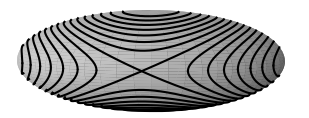

We begin with the Euler equations:
$$
I_i\dot\omega_i = \sum_{jk} \epsilon_{ijk}I_j\omega_j\omega_k
$$
(no implicit summations here)
It's important to note here that these equations are in a frame moving together with the body (which is generally non-inertial). This is done so that $\mathbf I$ is constant in time. Further we choose the coordinate axes to coincide with the principal axes of inertia, so that $\mathbf I$ is diagonal.
There are two special cases we'll mention briefly. First, $\boldsymbol\omega$ is a constant iff $\boldsymbol\omega_0$ is parallel to one of the principal axes. Second, the symmetric case; if two of the moments, say $I_1,I_2$, are equal, then the 3rd equation becomes
$$
I_3\dot\omega_3 = (I_1-I_2)\omega_1\omega_2 = 0
$$
and so with $\omega_3\equiv\omega_{03}$ (constant), the other two equations become
$$
\dot\omega_1 = \Omega\omega_1
\qquad
\dot\omega_2 = -\Omega\omega_2
$$
where
$$
\Omega = \frac{I_2-I_3}{I_1}\omega_{03} = \frac{I_1-I_3}{I_2}\omega_{03}
$$
It will be noticed then that $\omega_1,\omega_2$ oscillate harmonically in quadrature with one another with angular frequency $\Omega$. The tip of $\boldsymbol\omega$ in the body frame is seen to move uniformly around a circle of radius $\sqrt{\omega_{01}^2+\omega_{02}^2}$, perpendicular to the symmetry axis and a height $\omega_{03}$ above the origin.
If there is a second axis of symmetry, which means the body is a sphere, further $\Omega=0$, and $\boldsymbol\omega$ is a constant.
Now to deal with the general case. The $i$th Euler equation can be multiplied on both sides by $\omega_i$ to yield
$$
a_i\omega_1\omega_2\omega_3 = \dot\omega_i\omega_i = \frac12\frac d{dt}\omega_i^2
$$
which can be used to express any one $\omega_j$ as a function of any other $\omega_i$: divide the $j$th equation of this last form above by the $i$th one and rearrange,
$$
\frac d{dt}\omega_j^2 = \frac{a_j}{a_i}\frac d{dt}\omega_i^2
$$
and then integrate to obtain
$$
\omega_j^2 = \frac{a_j}{a_i}(\omega_i^2-\omega_{0i}^2) + \omega_{0j}^2
$$
With these, we can rewrite the $i$th Euler equation entirely in terms of $\omega_i$:
$$
\dot\omega_i^2 = (a_j\omega_i^2+b_{ij})(a_k\omega_i^2+b_{ik})
$$
(the indices $ijk$ here are one of the even permutations 123, 231, 312 of the indices)
Separating the variables and integrating we obtain the formal solution
$$
t-t_0 = \int_{\omega_{0i}}^{\omega_i} \frac{d\omega_i}{\sqrt{(a_j\omega_i^2+b_{ij})(a_k\omega_i^2+b_{ik})}}
$$
which would then have to be inverted to obtain $\omega_i$ as a function of $t$. The integral on the RHS is not in general expressible in closed form in terms of elementary functions though, and even though the coefficients are not independent, there is not enough for such a simplification. What we'll need here are the so-called elliptic functions. These are in a sense a generalization of the trigonometric functions (also known as circular functions)—the name comes from the fact that they first arose in the study of the arc length of the ellipse. Their most prominent appearance in physics is probably in the large-angle motion of the pendulum, and another curious fact about them is that they account for the elliptic in elliptic curve cryptography (as in Bitcoin). There happen to be pretty efficient algorithms for their computation too, so much so that they have been explored as means of computing other quantities like the elementary functions and of course, $\pi$; indeed, the Brent-Salamin formula, giving one of the fastest ways of computing $\pi$ (45 million correct digits in 25 iterations, to quote Wiki), is a product of the theory of elliptic functions. We'll look a little into these algorithms later.
From the physical interpretation of the coefficients, we can deduce some things like… the polynomial in the denominator must have a real root. Otherwise $\omega_i$ is unbounded (even worse, blows up in finite time), which violates conservation laws. A careful but tedious analysis will ultimately reveal that in every case it will be possible to find real $\alpha_i,\lambda,\epsilon$ such that with the substitutions $\omega_i=\alpha_i\psi_i$ and $u=\lambda t + \epsilon$, the equation becomes $du = \frac{d\psi_i}{G(\psi_i)}$ where $G$ is one of
$$
(1-\psi_i^2)(k^2\psi_i^2 + k^{\prime2})
\quad\text{or}\quad
(1-\psi_i^2)(1-k^2\psi_i^2)
\quad\text{or}\quad
(1-\psi_i^2)(\psi_i^2-k^{\prime2})
$$
where $k\in[0,1]$ and $k'\equiv\sqrt{1-k^2}$ (a common abbreviation in this context, more on that later). For each one of the different components Euler equations, $G$ will take on a different form, so that the three forms shown above appear in the full solution. Also notice how we have ommitted subscripts on $\lambda,\epsilon,k$. That's because indeed they are the same for each of the the components.
Anyway, in each of these cases then, through the respective substitutions,
$$
\psi_i=\cos\phi
\quad\text{or}\quad
\psi_i=\sin\phi
\quad\text{or}\quad
\psi_i=\Delta(\phi) \equiv \sqrt{1-k^2\sin^2\phi}
$$
the equation becomes
$$
u=\int\frac{d\phi}{\Delta(\phi)} \equiv F(\phi,k)
$$
So we have reduced the problem to a single integral, the so-called first (incomplete) elliptic integral; its inverse (what we want) is called the amplitude:
$$
\phi = \am(u,k)
$$
The quantity $k$ here is called the modulus, and when there is no possibility of confusion it's usually ommitted (as we did in $\Delta$). Beware though that some authors (and software implementations like Wolfram and SciPy) take the second argument to be $m\equiv k^2$ (called then the parameter) (elliptic function jargon is pretty colorful).
Here's a plot of $\phi(u)$ for different values of $k$, from the DLMF:
 We see that the integrand is a periodic function with a constant offset, and so on integration we get a linear function with some wobbles. To be more quantitative, we can notice that
$$
\am(u+2K) = \pi + \am u
\qquad\text{where}\qquad
K = K(k) \equiv F(\textstyle{\frac\pi2},k)
$$
and so
$$
\am u = \frac{\pi u}{2K} + (\text{periodic terms})
$$
The graph suggests that disregarding these periodic terms altogether we still get a decent approximation for $k$ relatively far from zero (which would be the symmetric case, in which the approximation holds exactly), and so we conclude
\begin{align}
\omega_i &\propto \cos\am(u,k) \equiv \cn(u,k) \approx \cos\left(\frac{\pi\lambda}{2K}t+\phi_0\right) \\
\omega_j &\propto \sin\am(u,k) \equiv \sn(u,k) \approx \sin\left(\frac{\pi\lambda}{2K}t+\phi_0\right) & (k\not\approx 1) \\
\omega_k &\propto \Delta\am(u,k) \equiv \dn(u,k) \approx 1 \\
\end{align}
(the notations $\cn$, $\sn$, $\dn$ are standard; these are called the Jacobi elliptic functions)
We see that the integrand is a periodic function with a constant offset, and so on integration we get a linear function with some wobbles. To be more quantitative, we can notice that
$$
\am(u+2K) = \pi + \am u
\qquad\text{where}\qquad
K = K(k) \equiv F(\textstyle{\frac\pi2},k)
$$
and so
$$
\am u = \frac{\pi u}{2K} + (\text{periodic terms})
$$
The graph suggests that disregarding these periodic terms altogether we still get a decent approximation for $k$ relatively far from zero (which would be the symmetric case, in which the approximation holds exactly), and so we conclude
\begin{align}
\omega_i &\propto \cos\am(u,k) \equiv \cn(u,k) \approx \cos\left(\frac{\pi\lambda}{2K}t+\phi_0\right) \\
\omega_j &\propto \sin\am(u,k) \equiv \sn(u,k) \approx \sin\left(\frac{\pi\lambda}{2K}t+\phi_0\right) & (k\not\approx 1) \\
\omega_k &\propto \Delta\am(u,k) \equiv \dn(u,k) \approx 1 \\
\end{align}
(the notations $\cn$, $\sn$, $\dn$ are standard; these are called the Jacobi elliptic functions)
(also, $ijk$ here is not necessarily an even permutation of the indices like before)
And so we have a qualitative description of the behavior of $\boldsymbol\omega$: it is predominantly about one of the principal axes (the one that gets the $\Delta$ substitution), wobbling slightly about this and the other two.
We can say more than that though; if one actually looks into the substitutions we skipped over earlier, it is seen that the cosine and $\Delta$ substitutions always go with the largest and smallest axes of inertia; which axis gets which substitution depends on whether $2TB \lessgtr L^2$, where here $B$ is the intermediate moment of inertia. Consequently, the intermediate axis of inertia always gets the sine, and so we conclude that the motion is never predominantly about the intermediate axis (except in the case discussed earlier where $\boldsymbol\omega_0$ is perfectly parallel to this axis)—this is the tennis racket theorem.
The theorem can also be derived from a simple conservation argument, as follows. The fact that both energy and angular momentum (magnitude) must be conserved imposes a condition on the components $L_i = I_i\omega_i$ of $\mathbf L$ in the body frame:
$$
2T = \sum_i \frac{L_i^2}{I_i}
\qquad
L^2 = \sum_i L_i^2
$$
That is, they must lie at the intersection of an ellipsoid and a sphere. Below then we see (in black) the intersections of a triaxial ellipsoid with spheres of different radii (not shown). We notice that the trajectories with $L_i \approx L$ stay near the trajectories with $L_i = L$ for the largest and smallest axes of inertia, but not for the intermediate one.

For the $k\approx 1$ case, the bulk of the integral comes from the near-singularity at $\phi=\pi/2+n\pi$, and so the amplitude stays near there most of time, with an increase of $\pi$ every increase of $2K$ in $u$. This means that the sine roughly alternates between $\pm 1$, while the other functions are mostly zero, with brief surges (in the $k=1$ limit, $\cn u = \dn u = \sech u$ and $\sn u = \tanh u$) in between alternations—the Dzhanibekov effect. Below is another figure from the DLMF, with $1-k=10^{-6}$.

Now let's talk about computation of elliptic functions. We can begin our discussion examining the following innocent looking sequence: given two positive reals $a\ge b$, define
$$
a_0 = a
\qquad
b_0 = b
$$
$$
a_{n+1} = \frac{a_n + b_n}2
\qquad
b_{n+1} = \sqrt{a_n b_n}
$$
That is, $a_n$ gives the arithmetic mean of the previous two terms, and $b_n$, the geometric mean. From the arithmetic/geometric mean inequality we have that
$$
b_n \le b_{n+1} \le a_{n+1} \le a_n
$$
and then from
$$
0 \le \epsilon_{n+1} = \frac12\frac{\epsilon_n^2}{(\sqrt{a_n}+\sqrt{b_n})^2}
\qquad
\epsilon_n = a_n - b_n
$$
we see that in fact both sequences converge and to a common limit
$$
\lim a_n = \lim b_n \equiv M(a,b)
$$
called their arithmetic-geometric mean $M(a,b)$. Moreover from the second equation we see that the convergence is quadratic,
$$
\epsilon_{n+1} \in O(\epsilon_n^2)
$$
in the sense that the error in the next approximation $\epsilon_{n+1}$ is asymptotically at most proportional to the square $\epsilon_n^2$ error in the previous approximation (in fact we have better than that, with $\epsilon_{n+1}\in o(\epsilon_n^2)$). This means that the number of correct digits roughly doubles with each iteration. See an example below.
a b ε
999.0000000000000000 1.0000000000000000 998.0000000000000000
500.0000000000000000 31.6069612585582149 468.3930387414417851
265.8034806292790790 125.7118953372317378 140.0915852920473412
195.7576879832554084 182.7967705872831630 12.9609173959722455
189.2772292852692999 189.1662580403072411 0.1109712449620588
189.2217436627882705 189.2217355277444142 0.0000081350438563
189.2217395952663423 189.2217395952662855 0.0000000000000568
189.2217395952663139 189.2217395952663139 0.0000000000000000
The remarkable fact here is the following:
$$
\frac{\pi/2}{M(a,b)}= I(a,b)\equiv\int_0^{\pi/2}\frac{d\phi}{\sqrt{a^2\cos^2\phi+b^2\sin^2\phi}} = \frac{K(\sqrt{1-b^2/a^2})}a
$$
This can be proved by showing that the integral, like the AGM, is invariant under the substitution $a_n,b_n\to a_{n+1},b_{n+1}$. That is, if we have
$$
I(a_n,b_n) = I(a,b) = I\left(\frac{a+b}2,\sqrt{ab}\right) = I(a_{n+1},b_{n+1})
$$
then on iterating the substitution, we obtain
$$
I(a,b) = I(\lim a_n, \lim b_n) = I[M(a,b),M(a,b)] = \frac{\pi/2}{M(a,b)}
$$
We establish this invariance through the simple change of variables
$$
\sin\phi = \frac{2a\sin\theta}{a+b+(a-b)\sin^2\theta}
$$
inside the integral. Employing the abbreviations
$$
c=\cos\theta
\qquad
s=\sin\theta
\\
S=a+b
\qquad
D=a-b
$$
so that
$$
SD = a^2-b^2
\qquad
S^2+D^2=2(a^2+b^2)
\qquad
S^2-D^2 = 4ab
$$
we begin by expressing the radicand as
\begin{align}
a^2\cos^2\phi + b^2\sin^2\phi &= a^2-SD\sin^2\phi \\
&= \frac{a^2(S-Ds^2)^2}{(S+Ds^2)^2}
\end{align}
through the definition. Then, differentiating both sides of the definition,
$$
\cos\phi\,d\phi = 4ac\frac{S-Ds^2}{(S+Ds^2)^2}\,d\theta
$$
and then using the definition again, we obtain
$$
d\phi = 2ac\frac{S-Ds^2}{S+Ds^2}\frac{d\theta}{\sqrt{(S+Ds^2)^2-(2as)^2}}
$$
And so the integrand is written
$$ \frac{d\phi}{\sqrt{a^2\cos^2\phi+b^2\sin^2\phi}} = \frac{2c\,d\theta}{\sqrt{(S+Ds^2)^2-(2as)^2}}
$$
Examining the radicand on the RHS,
\begin{align}
(S+Ds^2)^2-(2as)^2 &= S^2 + (Ds^2)^2 - (S^2+D^2)s^2 \\
&= D^2c^4 + (S^2-D^2)c^2
\end{align}
we get
\begin{align}
\frac{d\phi}{\sqrt{a^2\cos^2\phi+b^2\sin^2\phi}} &= \frac{2\,d\theta}{\sqrt{D^2c^2 + (S^2-D^2)}} \\
&= \frac{d\theta}{\sqrt{\frac{S^2}4c^2 + \frac{S^2-D^2}4s^2}} \\
&= \frac{d\theta}{\sqrt{\left(\frac{a+b}2\right)^2\cos^2\theta + ab\sin^2\theta}}
\end{align}
Finally we notice that the interval of integration gets mapped to itself, and the desired result is concluded. $\square$
Thus we find in the AGM a simple and fast algorithm to compute the integral $K(k)=F(\textstyle{\frac\pi2},k)$. But for our purposes we also need to compute $F(\phi,k)$ for values of $\phi$ other than $\pi/2$. The appropriate generalization of the AGM transformation is called Landen's transformation. In our case we can begin with the change of variables
$$
\sin(2\theta-\phi)=k\sin\phi
$$
or equivalently, using the angle addition formula,
$$
\frac{\sin2\theta}{k+\cos2\theta} = \tan\phi
$$
Differentiating both sides of the first equation we ultimately obtain
$$
\frac{2\,d\theta}{\cos(2\theta-\phi)+k\cos\phi} = \frac{d\phi}{\cos(2\theta-\phi)} = \frac{d\phi}{\sqrt{1-k^2\sin^2\phi}}
$$
where in the last equality we have used the definition, and so we're done with the $\phi$ side of the equation. For the $\theta$ side, on the denominator, applying angle addition again we obtain
$$
\cos(2\theta-\phi) = \cos\phi\left(k+\cos2\theta+\frac{\sin^22\theta}{k+\cos2\theta}\right)
$$
Using then
$$
\cos^2\phi = \frac1{1+\tan^2\phi} = \frac{(k+\cos2\theta)^2}{(k+\cos2\theta)^2+\sin^22\theta}
$$
the denominator is rewritten
$$
\cos\phi\left(k+\cos2\theta+\frac{\sin^22\theta}{k+\cos2\theta}\right) = \sqrt{(1+k)^2-4k\sin^2\theta}
$$
to ultimately obtain
\begin{align}
\frac{d\phi}{\sqrt{1-k^2\sin^2\phi}} &= \frac{2\,d\theta}{\cos(2\theta-\phi)+k\cos\phi} \\
&= \frac2{1+k}\frac{d\theta}{\sqrt{1-\left(\frac{2\sqrt k}{1+k}\right)^2\sin^2\theta}}
\end{align}
or
$$
F(\phi,k) = \frac2{1+k}F\left(\theta,\frac{2\sqrt k}{1+k}\right)
$$
The computation is performed by iterating the transformation. Defining
$$
\phi_0 = \phi
\qquad
k_0 = k
\\
\sin(2\phi_{n+1}-\phi_n) = k_n\sin\phi_n
\qquad
k_{n+1} = \frac{2\sqrt{k_n}}{1+k_n}
$$
we notice that the sequence of angles $\phi_n$ tends to a definite limit $\Phi$, and the sequence of moduli $k_n$ tends to 1, which gives an elementary integral:
\begin{align}
F(\phi,k) &= F(\phi_0, k_0) = \frac2{1+k_0}F(\phi_1,k_1) = \frac2{1+k_0}\frac2{1+k_1}F(\phi_2,k_2) \\
\dots &= \left(\prod_{n=0}^\infty \frac2{1+k_n}\right)F(\Phi,1)
\end{align}
$$
F(\Phi, 1) = \int_0^\Phi \sec\phi\,d\phi = \log\tan\left(\frac\pi4+\frac\Phi2\right)=\gd^{-1}\Phi
$$
($\gd$, sometimes referred to as the Gudermannian function)
and so we can compute $F$. Of course what we really want is to calculate the inverse of $F$, the amplitude. To this end we can apply the transformation a known and finite number of times: given $u$ and $k$, we have
$$
u = F(\am u, k) = F(\phi_0,k_0) = \left(\prod_{n=0}^{N-1}\frac2{1+k_n}\right)F(\phi_N, k_N)
$$
At this point $k_N$ should be reasonably close to 1, and so the approximation
$$
u_N = u\left(\prod_{n=0}^{N-1}\frac{1+k_n}2\right)=F(\phi_N, k_N) \approx \gd^{-1}\phi_N
$$
should be good. Taking the Gudermannian of boths sides, we get
$$
\phi_N \approx 2\tan^{-1}\exp u_N - \frac\pi2
$$
and now the original amplitude $\phi_0 = \am(u,k)$ is obtained by applying the inverse angle transformation $N$ times. Here's a JS implementation:
function am(u, k) {
var ks = [];
while (1.0 - k > 1e-12) {
ks.push(k);
k = 2*sqrt(k)/(1+k);
}
var uN = u;
for (k of ks)
uN *= (1+k)/2;
var phi = 2 * atan(exp(uN)) - pi/2;
for (var n = ks.length - 1; n >= 0; n--)
phi = atan2(sin(2*phi),ks[n]+cos(2*phi));
return phi;
}
In practice, it's useful to use the parity of the function to avoid negative argument values, and the quasi-periodicity to avoid large argument values. The inverse angle transformation is also a potential source of problems with the arc tangent functions. Also, since $k$ is constant through the motion, the product $\prod_n\frac{1+k_n}2$ only needs to be computed once.
With this we can find the coordinates $\omega_i$ of the angular velocity in the body frame. What we really want though is the orientation of the body. Generally this would be done by "integrating" the angular velocity, but in our case there is a simplification. Knowing the $\omega_i$ we can find $L_i=I_i\omega_i$, the coordinates of $\mathbf L$ in the body frame at any instant in time. But we know the coordinates of $\mathbf L$ in the space frame, since it is conserved. Concretely, this determines two out of the three degrees of freedom.
This can be seen by expressing $L_i$ in terms of the Euler angles; if we let $\mathbf L=L\hat{\mathbf z}$ in space, then (using Goldstein's convention),
\begin{align}
I_1\omega_1 &= L\sin\theta\sin\psi \\
I_2\omega_2 &= L\sin\theta\cos\psi \\
I_3\omega_3 &= L\cos\theta
\end{align}
For the final degree of freedom, we have to perform an integration. We can express the $\omega_i$ in terms of the Euler angles and their derivatives (Goldstein § 4.9, Eq. 4.125) and then, on combining with the above and inverting, we find
$$
\dot\phi = \frac L{I_1}\sin^2\psi + \frac L{I_2}\cos^2\psi
$$
A closed form expression of $\phi$ now in terms of Jacobi $\theta$-functions can be found in Whittaker, but we'll find it enough to integrate the above numerically.